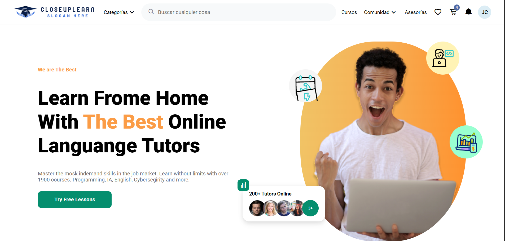

01
HABILIDAD PRINCIPAL
Desarrollador de software
Diseño y desarrollo de soluciones eficientes, escalables y fáciles de mantener.
→
"Situado en la intersección del desarrollo de software, el diseño de sistemas y la creación de soluciones digitales eficientes y elegantes."
Soy desarrollador de software con experiencia apoyando a empresas en la creación, gestión y optimización de sistemas digitales.
Me enfoco en construir soluciones claras, funcionales y bien estructuradas, combinando lógica, diseño y eficiencia.
Diseño y desarrollo de soluciones eficientes, escalables y fáciles de mantener.
Sitios web modernos, responsivos y accesibles enfocados en rendimiento y estética limpia.
Diseño, optimización y mantenimiento de bases de datos relacionales.
Soporte preventivo y correctivo, instalación y mantenimiento de infraestructura.
Proyectos que combinan funcionalidad, diseño e impacto real en diferentes sectores.
 01
01
Solucion integral para la automatizacion de inventario, ventas y logistica multicentro

02Plataforma interactiva con perfiles de usuario, seguimiento de lecciones y administración de contenido dinámico.
Extracción de datos, generación de reportes y notificaciones automáticas vía email.
Mis proyectos se ubican en la intersección de cuatro clústeres interconectados.
Tiempo máximo de respuesta garantizado
Áreas de interés, análisis técnico y exploraciones conceptuales.
Investigación centrada en algoritmos, automatización inteligente y sistemas de apoyo a la decisión. Aplicación práctica de IA para resolver problemas reales de forma eficiente.
Estudio de buenas prácticas, arquitectura de sistemas, mantenibilidad y calidad del software. Enfoque en código limpio y patrones de diseño robustos.
Análisis de bases de datos, optimización de consultas e integridad de la información. Conexión entre datos, procesos y toma de decisiones estratégicas.
¿Tienes una idea, proyecto o simplemente quieres conversar? Estoy abierto a nuevas oportunidades.